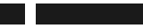

Sonda de marca e site
Texto da página para a medida de contraste, com o bastante para ocupar a linha inteira da tela em qualquer largura que o verificador abra.
Foto da fachada vem aqui
Onde fica
Rua do Exemplo, 100.

Onde fica Onde ficaTexto da página para a medida de contraste, com o bastante para ocupar a linha inteira da tela em qualquer largura que o verificador abra.
Rua do Exemplo, 100.